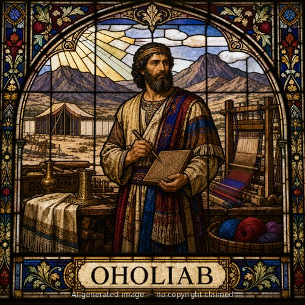

Oholiab — stained-glass style portrait
Oholiab (M)
First named in Exodus 31:6
Oholiab, son of Ahisamach of the tribe of Dan, was named by God as chief assistant to Bezalel in constructing the tabernacle and its furnishings at Mount Sinai. When the LORD gave Moses the tabernacle's detailed design, He also specifically equipped the craftsmen who would build it: "I have filled him [Bezalel] with the Spirit of God, in wisdom, in understanding, in knowledge and in all craftsmanship... And I, behold, I have appointed with him Oholiab... and in the hearts of all who are skillful I have put skill" (Exodus 31:2-6). Oholiab is described as skilled in engraving, in designing, and in weaving fine linen and colored yarns -- broad artistic competence spanning metalwork, woodwork, and textiles (35:34-35). Moses called both men and "every skillful person in whom the LORD had put skill" to actually carry out the work once the people's freewill offerings had been gathered (36:1-2), and the finished tabernacle, ark, furnishings, and priestly garments -- described across many chapters of Exodus -- stand as the result. Oholiab's role is a reminder that the tabernacle's beauty was not incidental: God cared about excellence and craftsmanship in the place where He would dwell among His people, and equipped ordinary skilled workers, not only prophets or priests, to accomplish it.
Thought for Today
God filled Oholiab with skill to help build the place where He would dwell among His people. Jesus is God's presence with us now, the true dwelling place.
References: Exodus 31:6; Exodus 35:34; Exodus 36:1-2; Exodus 38:23